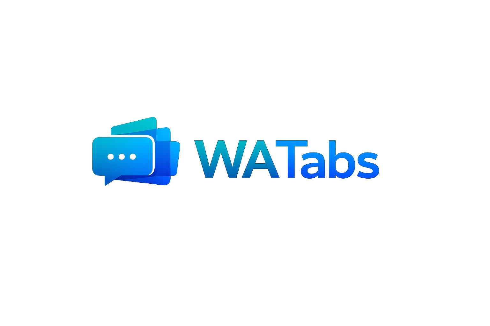

Many accounts. One local window.
Isolated WhatsApp Web sessions on your machine — the shell stays local; messaging stays on the official site.
What ships today
A desktop container for multiple persistent WhatsApp Web profiles — not a custom chat client.
- Separate partitions per account; sessions stay on disk locally
- Downloads, media permissions, tray, and optional app lock
- No WhatsApp DOM injection, scraping, or message automation